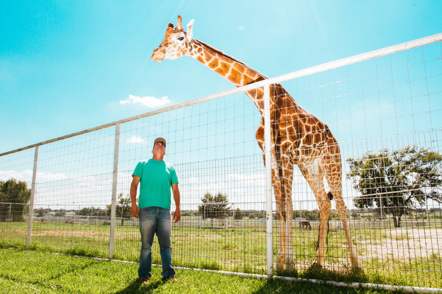

by Matthew Moran
October 23, 2018
"Walk towards 8th ave. You'll see me" reads the text I receive from Victor Llorente. I do just that and keep my eyes peeled for him. Just as I'm about text and ask what he is wearing I catch a glimpse of him.
Victor Llorente has come a ways since moving to New York City from Spain in the summer of 2015. Back in 2015 Victor was a freshman at FIT looking to build on his newfound interest for photography. Photography wasn't his first love, that title belongs to filmmaking. He was introduced to filmmaking through skating, it instantly captivated him. He was drawn to it that he dropped out of high school to pursue it, however this didn't sit well with this parents. As a result his parents forced him to go back to school. However they met Victor halfway and enrolled him in a filmmaking school where he would learn not only filmmaking but graphic design and photography. Victor soon discovered that filmmaking was overwhelming as it required having a large film crew,he also felt like he lacked full control. That didn't sit well with him. As for graphic design, well, it was the complete opposite of filmmaking. It was a one- man show described by Victor as "being lonely behind a computer screen, with no human interaction."" This left photography, which was just right. Not a crew but not alone, instead a person and his subject.
Three years later and Victor has been aggressively chasing photography. He has done work for the New York Times, New York Magazine and more recently The Cut, covering the Ralph Lauren 50th anniversary extravaganza. At the extravaganza he photographed everyone from Nick Jonas to Oprah Winfrey. He described feeling bad for bombarding them with his flash but "none of them said anything to me so it was ok. It was like I was invisible"
He was able to get the job through his instagram. The Cut emailed him a mood board with photos from his Instagram asking him if he could replicate the look for the Ralph Lauren event, h. His look being flash- heavy so that it puts his subjects right in the spotlight. This is the style that characterizes Victor's work and most notably his first project, The Lonely Star. The Lonely Star, is a 40- page book that centers on the North Texas State fair in Denton. This project came into fruition partly by chance. Victor had travelled with a friend to L.A. in 2015, however on his way back there were complications which resulted in them having to spend a night in Ohio before flying in to NYC. As a result the airline awarded them $300 in flight credit for their troubles.
It wasn't until his friend texted him to remind him that the $300 credit was about to expire. It wasn't until then that he thought about travelling to Denton. It seemed appropriate as he had been wanting to visit Texas and document the southern culture that his grandfather Alfredo adopted while being stationed in Texas during his military service. His grandfather who was originally from the Bronx came to love the southern culture so much that he opened a restaurant in Spain, Alfredo's BBQ that serves Texas-style food. Victor described his grandfather as "still dresses like a cowboy to this day, hat and all."
The Lonely Star aims to captures the culture that exist in Texas, it includes all the photos one would expect from Texas and more. Victor took the classic Texas photos of people with their prize horses, or people on their tractor however he also managed to find a giraffe to photograph. He described this as the most memorable part of the trip. As he had to sneak into private property to capture the shot, however he was caught when trespassing. He kept his calm and explained to the owner of the giraffe that he had come all the way from New York City to photograph Denton and it would appreciate the chance to photograph his giraffe. After hearing he had come all the way from NYC the owner agreed to let Victor have at it and take the pictures, even posing for Victor standing under the towering giraffe.

Through shooting the The Lonely Star, Victor finally got to experience the southern culture his grandfather has come to embody. If you're ever in Spain and get the chance to visit Alfredo's BBQ keep your eyes peeled as Victor's pictures from The Lonely Star are hanging all around the restaurant. A collaboration of sorts between grandfather and grandson.